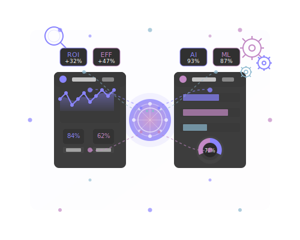

AI Solutions for Business
Strategic AI implementation to revolutionize your operations
System3 Consultancy provides end-to-end AI implementation services to help businesses harness the transformative power of artificial intelligence. Our team of experts combines academic expertise with practical industry experience to deliver solutions that drive real business value.
We take a strategic approach to AI implementation, ensuring that every solution is aligned with your business objectives and integrated seamlessly with your existing systems. From initial assessment and strategy development to implementation and ongoing support, we guide you through every step of your AI journey.
